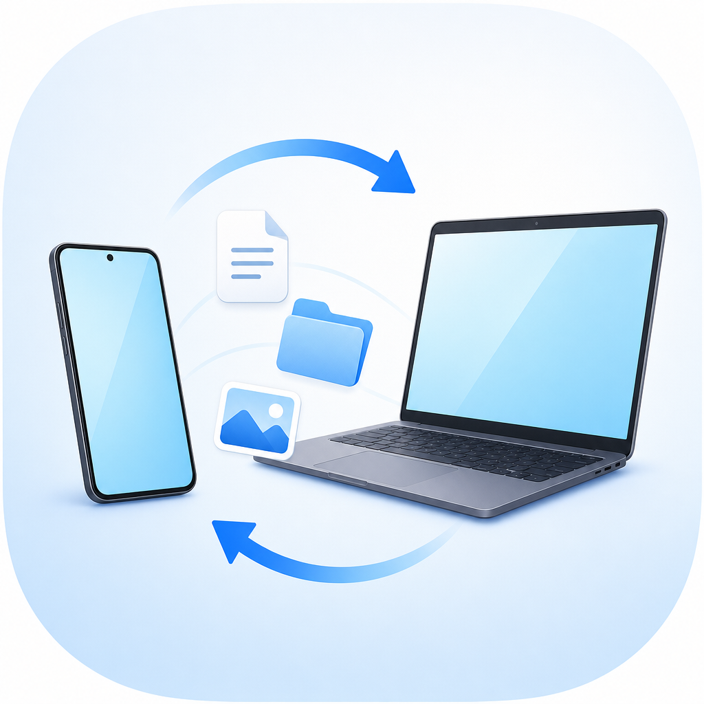

Capturas en el portapapeles
Una captura tomada en Android puede llegar a Windows lista para pegar, y las capturas de PC llegan al celular.

LocalClip para Windows
Portapapeles, capturas de pantalla y archivos entre Android y Windows en tu red local, sin pasos complicados.
Version Windows 0.1.101, instalador para Windows x64.
Hecho para uso diario
Una captura tomada en Android puede llegar a Windows lista para pegar, y las capturas de PC llegan al celular.
Envia uno o varios archivos entre dispositivos y conserva el historial claro de cada lote.
La app de PC muestra texto y miniaturas de capturas para copiar o arrastrar cuando lo necesites.
Instalacion
El instalador crea accesos directos, registra LocalClip en Windows y no requiere instalar .NET manualmente.